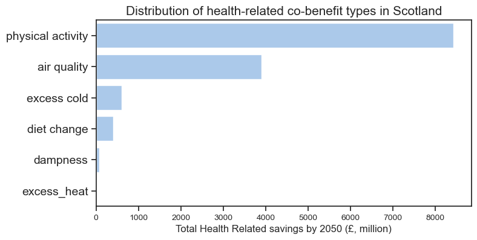

Climate policy is often framed as a cost.
However, data from the UK Co-benefits Atlas shows that actions to reduce emissions are predicted to also generate non-trivial benefits both for public health and employment.
This project explores how climate action can simultaneously reduce pressure on the NHS and create green jobs — and how these benefits are distributed across communities.
Section 1 — Climate Action Health-related Savings Across the UK
Health is One of the Largest Co-Benefits of Climate Action
Reaching net zero by 2050 is projected to generate substantial health-related savings across every region of the UK.
These health-related savings come from reduced air pollution, warmer homes, more physical activity, and healthier diets — all of which lower the risk of chronic disease and reduce hospital admissions.
Figure 1 — UK Map: Health-Related Co-benefits of Climate Action by 2050
This map shows the cumulative health-related savings from climate action between 2025 and 2050.
The different types of health improvements can be viewed using the toggles.
Improvements in air quality, physical activity, housing conditions, and diet all represent issues which can result in major, long-term, reductions in NHS demand.
This is because it is likely that NHS monetary savings in these areas is explained by a reduced demand for care.
Section Summary:
Climate action functions as long-term preventative healthcare, reducing avoidable NHS demand rather than simply shifting costs elsewhere.
From now, and for the rest of the analysis, we focus on data specific to Scotland.
We observe trends between the climate action co-benefits, health deprivation, employment deprivation, and job creation due to the climate action plan.
Section 2 — Health Savings, Deprivation, and Inequality in Scotland
Where Climate Action Helps — and Where More Support Is Needed
This map shows the cumulative health savings per small area from climate action, alongside local measures of deprivation and health.
Users can explore how benefits evolve over time and compare them with indicators such as health deprivation (health domain rank), employment deprivation (employment domain rank), new jobs per working age population and total co-benefit.
Use the slider to view by year.
Use the animate button to view over time.
Click a small area to see more information.
Figure 2 — Scotland Map: Health Savings and Deprivation Over Time
The health domain rank describes the health deprivation score of the small area - 1 being the most deprived.
Similarly, the job domain rank describes the employment deprivation score of the small area - 1 being the most deprived.
Areas with poorer health should have the greatest potential to benefit from preventative climate interventions (due to the health-related savings), yet projected savings remain lower in many of the more deprived communities.
Section Summary:
Climate action can reduce health inequalities — but only if investment is targeted to communities with the greatest health burden.
Section 3 — What Drives Health Savings?
Active Travel and Clean Air Deliver the Largest Health Gains
Most projected health savings come from increased physical activity and improved air quality, with minor benefits from temperature and dampness related factors.
This forecasting highlights the importance of transport, urban design, and the further development of walkable neighbourhoods as public-health interventions in the future.

Figure 3 — Distribution of Health Savings by Co-benefit Type (Scotland)
Policy relevance:
Investment in active travel infrastructure and cleaner transport can deliver health returns alongside emissions reductions.
Section 4 — Inequality and Health Benefits
Deprivation and Health Savings Move in Opposite Directions
When health savings are compared with deprivation levels, a clear pattern emerges: less deprived areas receive higher projected health savings.
At the same time, the NHS burden is highest in the most deprived communities, meaning that targeted climate investment could generate even greater healthcare savings where they are most needed.
Figure 4 — Total health savings of most and least deprived areas
Less deprived areas receive substantially higher projected health savings - despite less health burdens.
This suggests that a more targeted climate investment needs to be made to deliver the greatest NHS savings in communities with the highest health needs.
Hence, more targeted climate plans could result in a reduction of the deprivation gap, as well as increased overall climate action benefits.
Click the chart for extra detail.
Section Summary:
The communities with the highest health needs are not yet receiving the greatest preventative benefits.
Section 5 — Job creation from Climate Action
Green Job Growth Reaches Deprived and Affluent Areas Alike
Alongside health improvements, climate policies also drive employment growth in low-carbon industries.
Projections show similar levels of green job growth per capita in both more and less deprived areas,
indicating that the current climate action plan can lead to increased opportunities for all communities.
Figure 5 — Green Job Growth by Deprivation Group
Deprivation rank is the measure describing the deprivation score of the small area - 1 being the most deprived.
Green job growth is projected to be similar across both more and less deprived areas, indicating that climate investment supports local economies broadly.
This suggests climate action can deliver economic opportunity alongside health benefits in all communities.
Section Summary:
Climate action not only ensures health intervention benefits — it also provides economic growth and job opportunities.
Section 6 — The Combined Opportunity
One Policy, Multiple Benefits
Climate action offers a rare opportunity to deliver three public goals simultaneously: reduce NHS pressure, improve population health, support local employment.
With more targeted climate action goals toward high-need communities, the climate policy has the possibility to help narrow long-standing health inequalities between communities.
Methods
Health co-benefits are modelled estimates from the UK Co-benefits Atlas, representing monetised improvements in health outcomes linked to net-zero pathways.
SIMD 2020 indicators were used to contextualise deprivation and health burden at small-area level.
Green jobs projections were aggregated to match available geographic boundaries.
All savings are cumulative estimates between 2025 and 2050 and should be interpreted as indicative rather than exact forecasts.
Data Sources
UK Co-Benefits Atlas - University of Edinburgh
Scottish Index of Multiple Deprivation 2020v2 (SIMD 2020v2) - Scottish Government
Estimates of green jobs, industry approach UK: 2025 - ONS